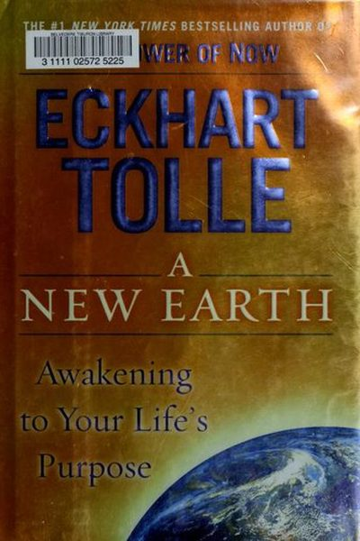

Library › Self-Improvement
A New Earth — Summary & Key Lessons

Awakening to your life's purpose — the follow-up to The Power of Now that sold 5+ million copies.
📖 OPEN THE FULL INTERACTIVE BREAKDOWN →🌐 Read it in Hindi, Hinglish, Gujarati, Tamil & 22 more languages — free, with audio.
💡 The Big Idea
Tolle's core teaching: most humans are run by the ego — a mental construct of 'me' that needs to be right, special and in control, and is therefore always anxious. The ego is not who you are; it's a story. Awakening means watching the ego without being it — and from that spacious awareness, your life's purpose unfolds naturally.
🧠 The 5 Key Lessons
Lesson 1: The Ego: The Fiction You Defend
The Flowering of Human Consciousness
The ego is the self-image your mind builds — 'I am smart, I am right, I am special'. It survives by comparing, complaining and being right. But the ego is not you: it's a thought-construct. The moment you watch your ego without believing it, you step into the real you — awareness itself.
📖 Example: Tolle describes how the ego turns every conversation into a win/lose game, every compliment into food and every insult into a wound. A simple test: notice how good being 'right' feels — that's the ego feeding. Read the full example →
⚡ Do this: Catch yourself needing to be right today — just once. Watch the urge, don't act on it, and notice who is watching.
Lesson 2: Complaining: The Ego's Favorite Food
The Ego's Many Disguises
Complaining makes you feel superior and right — which is why the ego loves it. Every complaint is the ego saying 'reality should be different — I am right, it is wrong'. The fix isn't suppressing complaints; it's catching the pattern and dropping it.
📖 Example: Tolle suggests a radical experiment: when something goes wrong, say nothing — no internal complaint either. The irritation dissolves faster than you'd expect because the ego loses its meal. Read the full example →
⚡ Do this: Try a 'no-complaint hour' today: every time you're about to complain internally or aloud, pause and let it go.
Lesson 3: The Pain-Body: Old Emotions That Run You
The Pain-Body
Unprocessed negative emotions accumulate into a 'pain-body' — an energetic entity that periodically awakens, takes you over, and feeds on drama, anger or self-pity. You know it when you 'become' the anger and later wonder why you exploded. The cure: observe it — 'I am feeling the pain-body' — and it loses its fuel.
📖 Example: Tolle describes how a small trigger can unleash a storm of rage that feels unstoppable — because the pain-body was already loaded. Watching it without judging it starves it. Read the full example →
⚡ Do this: Next time you feel disproportionate anger or sadness, name it internally: 'the pain-body is awake'. That witnessing is the beginning of freedom.
Lesson 4: Letting Go of the Need to Be Right
Who Do You Think You Are?
Being right is the ego's drug — but it costs you relationships and peace. Tolle's practice: when you feel the urge to correct someone, ask 'do I want to be right, or do I want peace?' Often the answer reveals the ego. Surrendering the need to win the argument is a profound power move.
📖 Example: In a disagreement with his partner, Tolle noticed the compulsion to prove his point — and realized the relationship mattered more than being right. Dropping the compulsion changed the conversation instantly. Read the full example →
⚡ Do this: In your next disagreement, let one point go unsaid. Watch how the other person softens when you stop fighting.
Lesson 5: Purpose: Presence Is the Door
The Purpose of Life
Tolle's surprising claim: your primary purpose is not what you DO — it's how present you are while doing it. The future goals matter, but they're secondary. The primary purpose is conscious presence — and from it, the right actions emerge naturally. Purpose found this way never burns out.
📖 Example: Tolle: 'You are here to enable the divine purpose of the universe to unfold — that is how important you are.' Practically: a janitor fully present serves as much as a CEO lost in ego — presence, not position, is the purpose. Read the full example →
⚡ Do this: Do one ordinary task today with total attention — washing dishes, walking, drinking tea. Nothing else. That's purpose practice.
✅ 5-Step Action Plan
- Watch one ego-need (to be right, to complain) without acting on it.
- Run one no-complaint hour daily.
- Name the pain-body when it awakens — don't fight it, observe it.
- Let one argument-point go unsaid this week.
- Do one ordinary task with full presence, daily.
💬 Best Quotes from A New Earth
- “You find peace not by rearranging the circumstances of your life, but by realizing who you are at the deepest level.”
- “The primary cause of unhappiness is never the situation but your thoughts about it.”
- “Whatever the present moment contains, accept it as if you had chosen it.”
Interactive version: mark lessons as read, listen in your language, share quote cards.